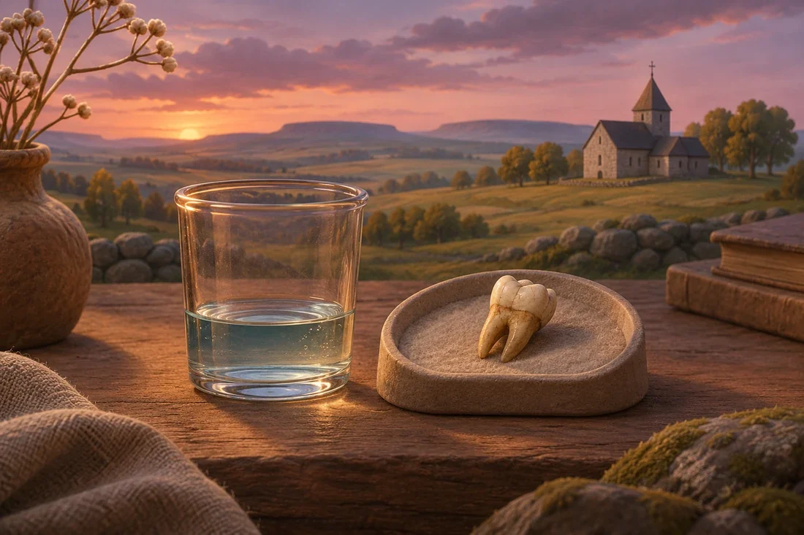

Om bilden
Tanden och vattenglaset symboliserar jämförelsen mellan gravlagdas emalj och lokala prover. Kyrkan är ett tänkt motiv. Bilden återger varken ett verkligt fynd, ett visst prov eller Varnhem som platsen såg ut på 900-talet.
Halvtimmen · Berättelser från Västergötland
Tänderna som bevarade en bit av Varnhems barndomar
Fördjupning. På höjden bakom klosterruinen i Varnhem har arkeologerna hittat kristna gravar från 900-talet. Men för att undersöka var några av de gravlagda hade tillbringat sin barndom behövdes också något betydligt mindre än en grav: några tänder från sorkar.
Sorkarna hade hittats i jordlagren vid Kata gård. De rör sig över små områden, så deras tänder kan ge en ledtråd till vilket strontium som fanns tillgängligt på platsen. Strontium är ett grundämne som via föda och vatten byggs in i tandemaljen när den bildas. Proportionen mellan två former av ämnet, så kallade isotoper, varierar mellan olika geologiska miljöer. När emaljen är färdigbildad tar den inte upp nytt strontium på samma sätt. Därför kan den bevara en signal från en del av barndomen, även när en människa begravs långt senare.
Samma kyrkogård, olika spår
I en studie publicerad 2025 jämförde Crista Wathen-Avila och hennes kollegor emalj från 25 gravlagda personer med ett lokalt intervall som forskarna tog fram med hjälp av bland annat sorktänder och källvatten. Tolv personer hade bara värden utanför det lokala intervallet för den undersökta emaljen. Fyra hade bara värden inom det. Hos nio fanns både värden inom och utanför intervallet.
Det lokala intervallet gällde ungefär fem kilometer kring platsen. När forskarna tittade på ett större område blev intervallet bredare. Ett värde utanför det snäva spannet behöver alltså inte betyda en lång resa, och ett värde som passar in behöver inte betyda att personen växte upp just i Varnhem. Olika platser kan ge liknande signaler. Mat från annat håll kan också påverka värdena. De 25 personerna valdes dessutom utifrån vilka tänder som fanns tillgängliga, inte för att representera hela kyrkogården.
Gravarna säger något annat än tänderna. Gravskicket ger belägg för när kristna begravningar praktiserades på platsen, men det avslöjar inte varje människas egen tro. Tänderna säger i sin tur något om de geologiska miljöer som kan ha präglat kosten under barndomen, men inte varför någon kom till Varnhem eller varför de begravdes där. Det intressanta är att spåren går att läsa tillsammans utan att förväxla dem: en gemensam plats för de döda behövde inte vara en gemensam plats för deras uppväxt.